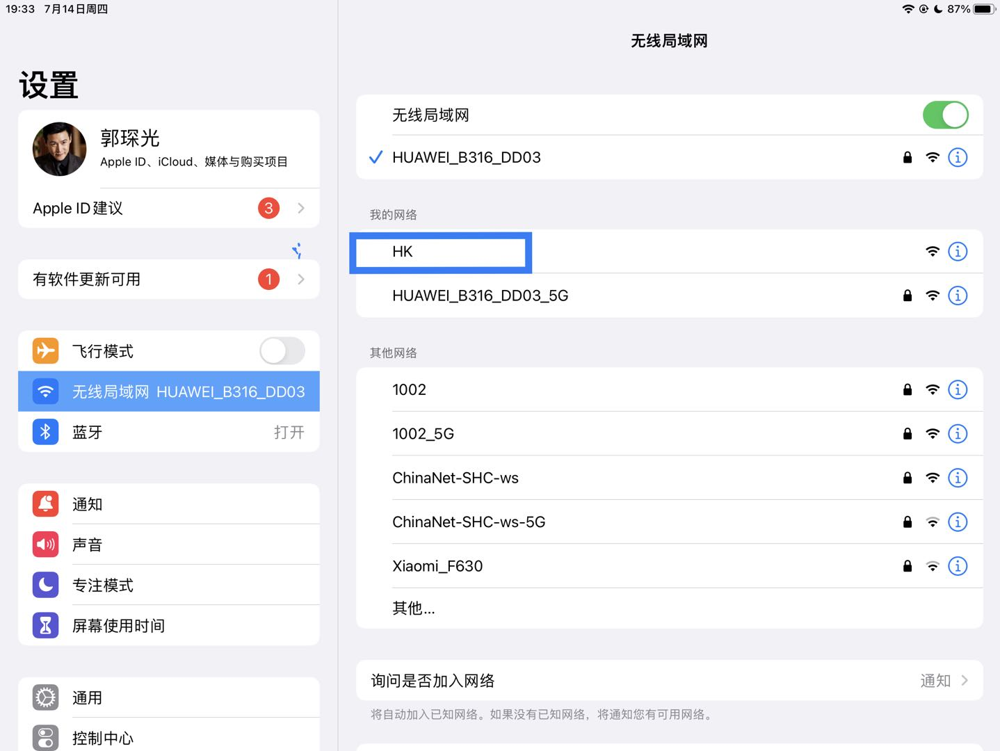

使用说明
使用说明
小夜灯需要接入网路后才能在苹果“家庭”中导入使用，配置前请确保以及具备配置使用环境。
使用环境：
- 1.具备2.4G 无线网络(小夜灯只能连接2.4G频段无线网)。
- 2.有一台苹果设备作为控制中枢（ipad/iPhone）。
配置步骤:
将设备接入电源，小夜灯通电后进行自检，绿色常亮。
首次使用（或wifi变更）需要重置网络，即在接通电源后绿灯亮起时长按壳体正面按钮，等待绿色灯熄灭，红色灯亮起时松开按钮。【后续启动会自动识别连接已配置的网络，只在网络异常时执行此操作】
注：后续使用过程中发现出现“绿色灯常亮->绿色灯熄灭->粉红色灯闪烁3次->绿色常亮”这种情况时，表面网络也存在问题，需要进行重置网络配置。
红色灯亮起时松开长按的按钮，打开ipad/iPhone手机网络，连接名为”HK”的wifi热点。
连接”HK”热点后，会自动跳转到wifi配置页面。
点击配置wifi，选择你家里的wifi，并配置密码。（必须是2.4G wifi）点击保存等待wifi配置（正常配置需要10s~90s），若配置成功，红色灯会转变为蓝色，否则尝试重复步骤4 或拔掉电源重启启动配置。
（首次使用或“家庭”变更需要重置）蓝色灯亮起时，小夜灯等待是否重置苹果家庭设备注册信息，若苹果家庭存在家庭移除变更，或者想更改小夜灯绑定不同“家庭”时，需要进行“家庭”重置。方法长按正面按钮，知道蓝色灯熄灭。
蓝色灯熄灭后，打开ipad/iPhone “家庭” 应用，创建“我的家” 家庭场景，在“我的家”中添加设备。
选择扫描出来的设备
点击任然添加
输入配对密码全为“1”
等待配置完成（若是配置失败，重复步骤6或者断电重新启动，重新启动可跳过wifi配置），更具喜好随性设置下。配置完成后，就可以在家庭应用中控制并使用小夜灯了
可设置写按钮开关自动化的操作。
具体苹果家庭中场景自动化或者一些好玩实用的功能可以自己摸索，小夜灯可以作为自动化场景中控制对象和被控对象进行使用。一些好玩的功能比如：日出关灯，日落亮灯，离家关灯，回家亮灯等等…